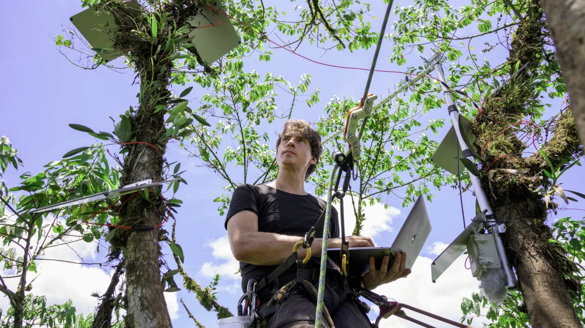
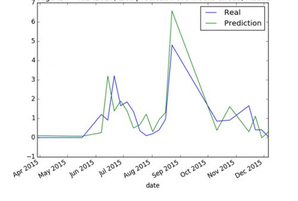

Protecting the environment with AI
A quick overview of some practical applications
 Credit: Arvinder Singh (IG: @sardarchitect)
Credit: Arvinder Singh (IG: @sardarchitect)
Employing forest guards to protect endangered species. Organising volunteers for beach cleanups. Encouraging people to lead greener lifestyles. These are just some of the traditional methods that have been used to protect our environment. But, as Alan Turing once said, ‘At some stage,… we should have to expect the machines to take control’ [1] and this couldn’t be more true in these conservation efforts. Be it preserving wildlife, cleaning up the environment or reducing green-house gas emissions, AI has started playing an increasingly dominant role as it has become good at numerous tasks such as visually identifying and tracking poachers or designing the most energy efficient buildings.
Google, for example, has used AI to increase the efficiency and significantly reduce the carbon footprint of its data centers. Data centers are massive energy consumers, being turned on 24/7 and requiring significant cooling. In 2016 it was reported that data centers used more electricity than Britain, producing roughly the same carbon footprint as the aviation industry [2]. A google search of the video “Despacito” activates six to eight of Google’s data centers [3]. In line with Google’s effort to stay carbon neutral (which they achieved in 2007 [3]), Google implemented a reinforcement learning algorithm in 2016 to determine what “cooling configurations (in its data centers) would reduce energy consumption” [5]. A reinforcement algorithm is a subset of machine learning in which the environment sends a ‘state’ and ‘reward’ to the ‘agent’ - the reinforcement learning algorithm - which in turn tries to maximise the reward [4]. The data centers using this reinforcement algorithm now consistently use 30% less energy than expected [6].
A Google data center in Iowa (MIT Technology Review)
Big companies are not the only ones that are taking advantage of AI to be more environmentally friendly. Small startups are using AI to tackle environmental problems as well. In a remote reserve in Ecuador, Topher White - founder of Rainforest connection (a startup that aims to combat deforestation) - climbs a tree using a small harness and installs a small box containing an old cell phone and solar cells [7]. These phones recoprd the natural rainforest sounds and use AI to detect logging noises, upon which a notification is sent to a ranger. He had started his firm after learning of the severity of deforestation: the number of trees has fallen by almost 50% since the beginning of human civilisation, and still over 15 billion trees are currently cut down every year [8]. Topher White’s first encounter with deforestation came ironically when he was on a trip to the rainforests of Borneo and was shocked to find illegal loggers just a hundred meters from the ranger station. Monitoring forests using AI to identify deforestation on satellite imagery often comes too late as satellite imagery requires some amount of deforestation before it becomes visible. However, the sound, he recalls, was deafening, which gave him the idea to mount these small phones on the treetops to identify logging. The very next day after the first installation, a logger was apprehended, and it is now preventing deforestation in 10 countries [7].

Topher White (Rolex/Stefan Walter via FastCompany)
In fact even industries have turned to using AI to reduce costs and also increase their sustainability. One example is in Norway, where AI is being used to increase the efficiency of salmon farms [9]. Telenor Research - the research wing of the Norwegian telecoms company Telenor that is conducting research on the use of AI in fish farms - has come up with a neural network that uses a video feed from underwater cameras to determine when the salmon have finished feeding. The salmon swim in schools which disperse when food is thrown, but when the salmon are full, there are tiny deviations in this behaviour which the neural network picks up with 80% accuracy. Identifying these cues to better feed the right amount of food is beneficial economically (40% of the cost of salmon farms comes from fish food), and also helps prevent low oxygen levels, algae blooms and high nitrate levels which are toxic to fish, among other problems [12].
There are numerous other AI applications in this area: IBM has come up with a machine learning tool named AquaCloud to predict lice outbreaks in Salmon with 70% accuracy using a random forest algorithm [10]. The industries’ increasingly intensive salmon and rainbow trout fishing encourages lice growth, which in turn makes them unsellable because lice feed on salmon skin [9].

The results of AquaCloud: the green line shows the lice outbreak predicted two weeks in advance. (NCE Seafood Innovation Center)
The use of AI on fish farms is especially beneficial as fish farms are sustainable and help to reduce the dependency on precious ocean fish populations. Wild salmon are being depleted at an alarming rate, yet Norway’s salmon exports are only rising. Even here, AI is also being used to track the wild salmon population in efforts to sustain its population [9].
These examples are but a small subset of AI-related projects that have been done. A brief search of new competitions regarding environmental solutions (most of which use AI, even if the competition implies only a possible technological solution), confirms the increasing interest in sustainability. The Xprize - a nonprofit that runs public competitions - is currently running a $10 million prize rainforest competition to “develop novel technologies to rapidly and comprehensively survey rainforest biodiversity and use that data to improve our understanding of this complex ecosystem” [11]. Microsoft’s AI for Good grants are given to projects that enhance climate, water, and biodiversity. Prince William recently launched the Earthshot prize - a series of annual one million pound prize competitions in five categories such as reviving the oceans, cleaning the air, and protecting nature. There are countless other competitions and the examples discussed in this article are just a taste of the AI environmental projects to come.
References
[1]: Ten Famous Quotes about Artificial Intelligence
[2]: Why Data Centres are the New Frontier in the Fight Against Climate Change
[3]: The Internet Cloud has a Dirty Secret
[4]: Introduction to Various Reinforcement Learning Algorithms
[5]: Google Just Gave Control Over Data Center Cooling to an AI
[6]: Google 2019 Environmental Report
[7]: This Network of Microphones Listens for the Chainsaws of Illegal Loggers in the Rainforest
[8]: Crowther et al., Mapping tree density at a global scale
[9]: AI Could Help Find Cheaper and Smarter Ways to Raise Fish
[10]: The Seafood Innovation Cluster
[11]: Rainforest XPrize